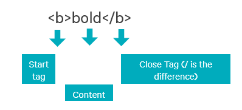

Learning HTML at Udacity
Basics of Web
Major pieces of World Wide Web a.k.a are User, PC with a browser, Internet a.k.a World's Largest Network, HTTP (application protocol to communicate with servers) and Servers (PCs hosting files)
How the Web Works - How are major pieces of WWW connected?
When user requests any webpage, DNS resolves the URL with IP address and connects to the server through Internet using HTTP protocol.
HTML
HTML stands for Hyper Text Markup Language. World Wide Web is collection of HTML files. Multiple HTML files can be linked by hyper links. HTML Consists of
- Text - actual content
- Markups - defines the look
- References to other documents, images, videos or any content
- Links to other pages a.k.a Hyperlinks
HTML documents is formed by one or more HTML elements. HTML elements are of two types - inline and block.
Block HTML elements have a kind of virtual boundary surrounding them.HTML elements are formed by HTML tags. Below is how bold HTML element looks like:

Not all HTML elements have closing tags. There are few elements which has only starting tag.